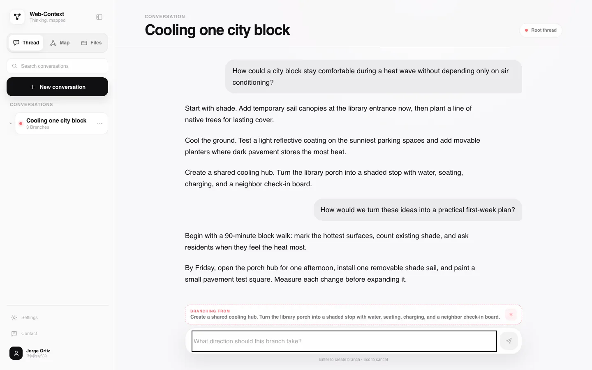
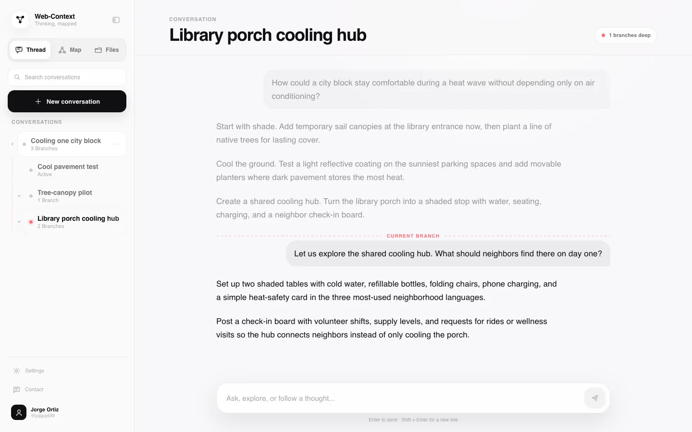
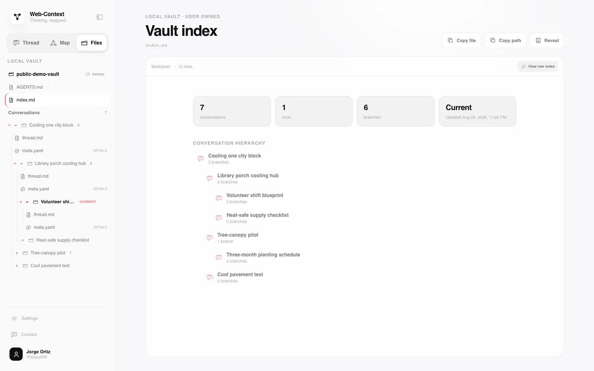

01 / BRANCH
Agent conversations, mapped
One answer. More than one direction.
02 / ADDRESSABLE BLOCKS
Choose a whole response block
Branch from the block that matters.
Exact block · exact fork point
NEW CHILD
Library porch cooling hub
Root context attached
03 / ISOLATED LINEAGE

Root → fork → current
Carry the path.
Leave siblings out.
04 / KNOWLEDGE TREE

Strict single-parent lineage
See every branch.
Paths move outward. They never converge.7 threads · 1 root
05 / LOCAL OWNERSHIP

Markdown · YAML · local Git
Keep the trail in files you own.
thread.md
meta.yaml
index.md
AGENTS.md
local Git history
Think in branches.
Lineage App
Branch agent conversations into knowledge you own.
Open source · Local-first · GitHub Copilot CLI beta
ortizjorge639.github.io/web-context-graph/